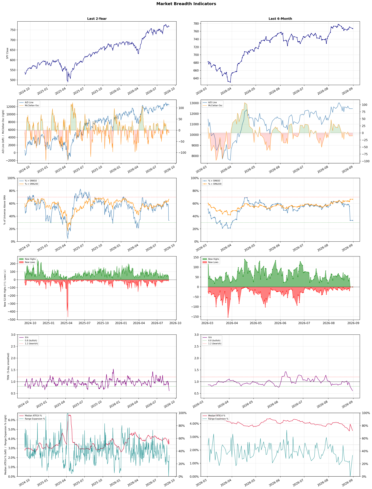

A daily market breadth and sector rotation report for active investors
| Item | Read |
|---|---|
| Regime downgraded | Selective Risk-On → Defensive |
| Regime | Defensive |
| Risk posture | Defensive |
| Universe | 1,331 stocks tracked · 30 active swing setups |
| Breadth | only 33.3% of tracked stocks are above SMA50, McClellan oscillator (breadth momentum) is negative at -10.2 |
| Leadership | Diagnostics & Research, Health Information Services, and Oil & Gas Refining & Marketing |
| Weakest groups | Solar, Footwear & Accessories, and Chemicals |
Use this report to prioritize research and chart review; validate entries, stops, liquidity, earnings, and risk before acting.
| Item | Read |
|---|---|
| Primary read | Defensive regime with Defensive risk posture. |
| Research queue | TWST, NEO, WGS, PSNL, NTRA |
| Leadership focus | Diagnostics & Research, Health Information Services, and Oil & Gas Refining & Marketing |
| Caution list | Solar, Footwear & Accessories, and Chemicals |
| Review prompt | Check extension risk, chart location, fundamentals, valuation, and earnings before using any research row. |
| Item | Read |
|---|---|
| Primary read | 3 active risk warnings; use screen output as watchlist input only. |
| Bullish screens | VNOM, DXYZ, APPS, DOCS, WAY |
| Bearish screens | AON |
| Alerts / levels | Automated trigger, stop, ATR, liquidity, reward/risk, and event-risk levels are pending future enrichment. |
| Review prompt | Open the linked chart, define trigger and invalidation, then check liquidity and event risk independently. |
Risk Posture: Defensive — screen backdrop favors caution; require independent risk review before new exposure
Metric context: McClellan below -50 = elevated selling pressure; below -100 = washout territory. Range Expansion = share of stocks with daily range above their 20-day average. Signal Density = share of tracked names appearing in signal screens.
| Breadth Date | % > SMA50 | % > SMA200 | New Highs | New Lows | McClellan | Median Range | Avg Range | Median ATR14 | Range Expansion | Signal Density |
|---|---|---|---|---|---|---|---|---|---|---|
| 2026-08-31 | 33.3% | 66.7% | 0 | 0 | -10.2 | 2.6% | 2.9% | 3.5% | 33.3% | 11.5% |

Regime downgraded: Selective Risk-On → Defensive
Prior comparison date: August 28, 2026
| Metric | Prior | Current | Change |
|---|---|---|---|
| Regime | Selective Risk-On | Defensive | changed |
| Risk Posture | Selective | Defensive | changed |
| % > SMA50 | 54.2% | 33.3% | -20.9 pts |
| % > SMA200 | 61.3% | 66.7% | +5.3 pts |
| New Highs | 20 | 0 | -20 |
| New Lows | 17 | 0 | +17 |
Top-10 industries entering: Software - Infrastructure. Top-10 industries leaving: Financial Data & Stock Exchanges. New multi-signal long setups: VNOM. New multi-signal short setups: none.
| Status | Tickers | Read |
|---|---|---|
| Added | ADBE, AI, AON, APPS, ASAN, ASST, BLMN, DHT | New technical screen matches vs prior report. |
| Removed | AMPL, BOX, CMBT, DT, ESRT, ESTC, EVGO, EWTX | No longer present in today's technical screen matches. |
| Still Active | ARX, AVTX, CRSR, DINO, DOCS, DXYZ, MPC, NMR | Appeared in both current and prior reports. |
| Promoted | VNOM | Model Screen Score improved by at least 15 points. |
| Downgraded | DINO, MPC, NMR | Model Screen Score declined by at least 15 points. |
| Direction | Industry | ETF | Prior Rank | Current Rank | Days | Rank Change |
|---|---|---|---|---|---|---|
| Rose | Gold | GDX | 86 | 6 | 42 | +80 |
| Rose | Copper | COPX | 84 | 8 | 42 | +76 |
| Rose | Agricultural Inputs | N/A | 84 | 17 | 14 | +67 |
| Rose | Uranium | URA | 88 | 34 | 35 | +54 |
| Rose | Asset Management | N/A | 57 | 4 | 42 | +53 |
Bull: Gold is experiencing a rise in relative strength primarily due to increasing concerns about economic instability and currency debasement, as highlighted by the headlines discussing the "debasement trade" and the significant rise in gold prices near $4,270. Additionally, the mention of gold mining stocks being 22% below their peak suggests a potential catch-up trade, indicating that investors are recognizing the undervaluation of gold miners like those in the GDX ETF amid ongoing industry pressures. The overall bullish sentiment in the market, as reflected in articles about investing in gold stocks and ETFs, further supports the notion that gold is becoming a favored asset in uncertain economic times.
Bear: While the rising relative strength of gold may seem promising, it is crucial to consider that the current economic environment is marked by rising interest rates and a strengthening U.S. dollar, which typically exert downward pressure on gold prices. Furthermore, the narrative of a "catch-up trade" may overlook the fundamental challenges facing gold miners, such as rising operational costs and regulatory pressures, which could hinder profitability and limit the potential for significant price appreciation in the GDX ETF.
Verdict: The gold industry's current rise is primarily driven by heightened concerns over economic instability and currency debasement, prompting investors to seek safe-haven assets like gold and gold mining stocks, which are perceived as undervalued. However, a key risk to this bullish momentum is the potential impact of rising interest rates and a strengthening U.S. dollar, which could pressure gold prices and challenge the profitability of gold miners, limiting the expected upside in the GDX ETF. Investors should closely monitor these macroeconomic indicators and consider diversifying their holdings to mitigate risks.
Sources: Yahoo Finance, Google News
Bull: Copper is experiencing a rising relative strength due to its critical role in the electrification trend, as highlighted by the headlines discussing COPX as a key player in the "electrification squeeze" and the shift towards AI technologies. The increasing demand for copper in renewable energy infrastructure, electric vehicles, and advanced technologies positions it as a vital commodity, especially as Wall Street begins to recognize its potential, as noted in the bullish sentiment surrounding COPX and its impressive performance compared to other sectors. Additionally, the recent gains in the copper sector, reflected in the Hang Seng Index's performance, further underscore the growing investor confidence in copper as a key driver of economic growth.
Bear: While the bullish narrative around copper's role in electrification and AI technologies is compelling, it overlooks several critical headwinds. The copper market is highly susceptible to global economic fluctuations, and any slowdown in major economies, particularly China, could significantly dampen demand. Additionally, the recent surge in copper prices may lead to increased production from miners, which could oversupply the market and pressure prices downward, undermining the optimistic outlook for ETFs like COPX.
Verdict: Copper's rising trend is fundamentally driven by its essential role in the electrification of economies, particularly in renewable energy and electric vehicles, which is gaining recognition from investors and reflected in strong ETF performance like COPX. However, a key risk to this bullish outlook is the potential for a slowdown in demand, especially from China, which could lead to oversupply from increased production and ultimately pressure copper prices downward. Investors should monitor global economic indicators closely to gauge the sustainability of copper's upward trajectory.
Sources: Yahoo Finance, Google News
Bull: The Agricultural Inputs sector is gaining relative strength due to a confluence of favorable macroeconomic factors and heightened investor interest, as highlighted by headlines like "Best Agriculture Stocks to Buy in 2026" and "Fertilizers Sector Stocks: 4 Picks for 2026." Increased demand for agricultural products driven by population growth and food security concerns, alongside a broader breakout in the economically sensitive materials sector, suggests a robust outlook for agricultural inputs. Furthermore, despite short-term volatility, as indicated by CF Industries' recent decline, the overall trend remains positive as investors recognize the long-term potential of this sector amidst rising agricultural themes.
Bear: While the Agricultural Inputs sector may currently exhibit rising relative strength, the bullish outlook overlooks significant headwinds such as potential supply chain disruptions, rising input costs, and increasing regulatory pressures that could dampen profitability. Additionally, the recent decline of CF Industries, amidst sector-wide selling, suggests that investor sentiment may be more fragile than it appears, indicating that the current enthusiasm may not be sustainable in the face of economic uncertainties and fluctuating commodity prices.
Verdict: The Agricultural Inputs sector is experiencing a rise in relative strength due to increasing demand for food driven by population growth and heightened investor interest in the materials sector, which is bolstering optimism about long-term profitability. However, key risks remain, including potential supply chain disruptions and rising input costs, which could undermine profitability and investor sentiment if economic uncertainties persist. Investors should closely monitor these factors while considering positions in this sector.
Sources: Google News
Bull: The rising relative strength of uranium stocks can be attributed to a renewed risk appetite among investors, as evidenced by the recent rebounds in stocks like Uranium Energy and NuScale Power, despite some volatility. This resurgence is likely driven by increasing demand for nuclear energy amidst a global push for cleaner energy solutions, highlighted by the contrasting performance of profitable producers versus loss-making developers, suggesting a shift towards established players in the sector as the market seeks stability amid broader economic uncertainties. Additionally, the significant price drop of uranium ETFs may have created attractive buying opportunities for investors looking to capitalize on the long-term growth potential of nuclear energy.
Bear: While the bull thesis highlights a renewed risk appetite and potential long-term growth in nuclear energy, it overlooks the significant volatility and recent sharp declines in uranium stocks, which indicate underlying instability and investor uncertainty. The 30% crash in uranium ETFs suggests that market sentiment is fragile, and the divide between profitable producers and loss-making developers raises concerns about the sustainability of growth in a sector that remains heavily reliant on government policy and public perception, particularly in light of increasing competition from alternative energy sources. Moreover, the recent sell-offs in key stocks like NuScale Power and Oklo indicate that even perceived leaders in the sector are not immune to market corrections, which could signal deeper issues within the industry.
Verdict: The uranium industry's recent upward trend is fundamentally driven by a growing demand for nuclear energy as a cleaner alternative, attracting investor interest in established producers amid heightened volatility. However, the key risk highlighted by the bear thesis is the significant market instability, evidenced by sharp declines in uranium ETFs and the fragility of investor sentiment, which could undermine long-term growth prospects if competition from alternative energy sources intensifies or if government policies shift unfavorably. Investors should proceed with caution, focusing on financially stable producers while being mindful of potential market corrections.
Sources: Yahoo Finance, Google News
Bull: The rising relative strength of the Asset Management industry can be attributed to increasing investor interest in diversified investment strategies amid changing economic conditions, as highlighted by the Zacks Investment Research article on flourishing investment management stocks. Additionally, the focus on alternative investments, despite some short-term challenges noted by Morningstar, suggests that asset managers are adapting to market dynamics, positioning themselves to capture opportunities in both domestic and international markets as investors seek stability and growth outside the U.S., as indicated by the CNBC report on overseas investments.
Bear: While the rising relative strength in the Asset Management industry may seem promising, it is essential to consider the potential headwinds posed by macroeconomic factors, particularly the impact of changing interest rates on investment returns. The Morningstar article highlights significant challenges facing alternative investments, which could undermine the profitability of asset managers as investors become increasingly risk-averse in a volatile economic environment. Additionally, the shift towards overseas investments, as noted by CNBC, may not be a panacea; geopolitical tensions and currency fluctuations could further complicate asset managers' ability to deliver consistent returns, ultimately dampening investor sentiment and inflows.
Verdict: The rising strength of the Asset Management industry is fundamentally driven by increasing investor demand for diversified strategies and alternative investments as a response to shifting economic conditions. However, key risks remain, particularly from changing interest rates and geopolitical tensions that could impact investment returns and investor sentiment, necessitating a careful assessment of market dynamics and risk management strategies by asset managers.
Sources: Google News
| Direction | Industry | ETF | Prior Rank | Current Rank | Days | Rank Change |
|---|---|---|---|---|---|---|
| Fell | REIT - Retail | N/A | 9 | 77 | 42 | -68 |
| Fell | REIT - Healthcare Facilities | XLRE | 4 | 65 | 35 | -61 |
| Fell | Travel Services | N/A | 3 | 63 | 28 | -60 |
| Fell | Leisure | N/A | 14 | 74 | 28 | -60 |
| Fell | Semiconductor Equipment & Materials | SOXX | 19 | 76 | 14 | -57 |
Bear: While the bull analyst highlights consumer spending and economic uncertainty as key factors affecting Retail REITs, it's important to recognize that the underlying fundamentals of the retail sector are deteriorating, with many brick-and-mortar stores struggling to compete against e-commerce. Additionally, rising interest rates are not just a concern but a significant headwind for Retail REITs, as they increase borrowing costs and can lead to reduced property valuations, further exacerbating the relative weakness of this sector amidst a shifting investment landscape.
Bull: The relative weakness of the Retail REIT sector can be attributed to broader market concerns regarding consumer spending and economic uncertainty, as highlighted in the recent headlines discussing the overall performance of real estate. With Morningstar emphasizing the need to identify strong REITs amidst market fluctuations and U.S. News focusing on the best REIT ETFs for 2026, it suggests that investors are cautious about retail-focused investments due to potential headwinds such as rising interest rates and changing consumer behavior. Additionally, the emphasis on diversification in types of REITs, as seen in the articles from DividendInvestor.com and Britannica, indicates a shift in investor preference towards more resilient sectors, further impacting the relative strength of Retail REITs.
Verdict: The Retail REIT sector is experiencing a decline primarily due to weakening fundamentals in the brick-and-mortar retail space, as many traditional stores struggle to compete with e-commerce, compounded by rising interest rates that increase borrowing costs and pressure property valuations. Investors should remain cautious, as the key risk lies in the potential for further deterioration in consumer spending and the overall retail landscape, which could exacerbate the challenges faced by Retail REITs. To mitigate risk, consider diversifying into more resilient sectors or REITs with strong fundamentals and adaptive strategies.
Sources: Google News
Bear: While the bull analyst attributes the weakness in the Healthcare Facilities REIT sector to a temporary shift in investor focus towards financial stocks, this overlooks fundamental challenges facing the sector, such as rising operational costs and increasing interest rates, which can significantly impact profitability and cash flow. Additionally, concerns about tenant stability and maintenance issues, as highlighted in the tenant headline, suggest deeper operational vulnerabilities that could deter long-term investment, especially as competition for capital intensifies in a tightening economic environment.
Bull: The relative weakness of the Healthcare Facilities REIT sector can be attributed to the broader market focus on financial stocks, as indicated by multiple headlines highlighting their recent performance. This shift in investor attention may have led to reduced capital inflow into healthcare REITs, despite their potential for stable income and growth, as suggested by articles emphasizing their value for retirement portfolios and long-term investment. Additionally, concerns about operational issues, such as the maintenance challenges mentioned in the tenant headline, could be contributing to investor caution in this sector.
Verdict: The decline in the Healthcare Facilities REIT sector is primarily driven by fundamental challenges such as rising operational costs and increasing interest rates, which directly impact profitability and cash flow. Additionally, concerns about tenant stability and maintenance issues highlight deeper vulnerabilities that could deter long-term investment, making it crucial for investors to closely monitor these operational risks as competition for capital intensifies.
Sources: Yahoo Finance, Google News
Bear: While the bull analyst highlights macroeconomic pressures and evolving consumer behaviors, it's essential to recognize that the travel industry is facing significant structural challenges that extend beyond short-term economic fluctuations. The headlines suggest a focus on investment opportunities and AI advancements, but these innovations may not translate into immediate profitability and could lead to increased competition and margin compression. Additionally, with rising interest rates and inflation persisting, the discretionary spending on travel may not rebound as anticipated, leading to a prolonged period of underperformance in the sector.
Bull: The Travel Services sector is experiencing a decline in relative strength primarily due to macroeconomic pressures and evolving consumer behaviors, as highlighted by the recent headlines. Factors such as rising interest rates and inflation may be dampening discretionary spending on travel, leading to cautious consumer sentiment. Additionally, the transition towards AI in the travel industry, as noted in the headlines, suggests a shift in operational efficiencies that may temporarily disrupt traditional business models, causing uncertainty among investors and impacting stock performance in the short term.
Verdict: The Travel Services sector is experiencing a decline primarily due to persistent macroeconomic pressures, such as rising interest rates and inflation, which are dampening consumer discretionary spending. The key risk from the bear case is that structural challenges and increased competition driven by AI advancements may hinder profitability and lead to prolonged underperformance, suggesting investors should approach the sector with caution and consider reallocating resources to more resilient industries.
Sources: Google News
Bear: While the bull analyst highlights selective optimism within certain stocks, the broader trend of falling relative strength in the leisure industry signals deeper systemic issues that cannot be overlooked. The increasing economic pressures, such as inflation and rising interest rates, are likely to dampen consumer discretionary spending further, leading to a potential downturn in travel and leisure activities. Additionally, the competitive landscape may not only favor select companies but could also result in market saturation and price wars, ultimately eroding profit margins across the sector.
Bull: The Leisure industry is experiencing a decline in relative strength primarily due to broader economic challenges affecting consumer discretionary spending, as highlighted by the recent earnings reports and analyses indicating cautious consumer behavior. Additionally, the headlines suggest a competitive landscape within the travel and tourism sectors, with specific stocks being favored for their resilience, such as TNL in the timeshare market, indicating a shift in investor focus towards select opportunities rather than the sector as a whole. This trend reflects a market environment where investors are selectively optimistic about certain companies while remaining wary of the overall industry's performance.
Verdict: The leisure industry's decline is fundamentally driven by broader economic challenges, particularly rising inflation and interest rates, which are constraining consumer discretionary spending and leading to cautious behavior among travelers. While select companies like TNL may exhibit resilience, the key risk from the bear case is the potential for market saturation and intensified competition, which could further squeeze profit margins and exacerbate the industry's downturn. Investors should remain vigilant and consider reallocating to more stable sectors or companies with strong fundamentals to mitigate exposure to these systemic risks.
Sources: Google News
Bear: While the bull analyst highlights cooling demand for AI hardware and geopolitical tensions as primary concerns, it's crucial to note that the semiconductor industry is inherently cyclical and often experiences volatility regardless of broader market conditions. The recent declines in stocks like Applied Materials and Marvell may signal deeper structural issues within the sector, such as overcapacity, increasing competition, and potential supply chain disruptions, which could hinder long-term growth prospects and profitability. Furthermore, the reliance on AI as a growth driver may be overstated, as the market could be saturated with players vying for a limited pool of demand, leading to further price pressures and diminished returns.
Bull: The Semiconductor Equipment & Materials sector is experiencing a decline in relative strength primarily due to cooling demand for AI hardware, as indicated by the significant drops in stocks like Applied Optoelectronics and Lumentum. Additionally, broader market concerns, such as geopolitical tensions reflected in the lower equity futures and ETFs, are contributing to a risk-off sentiment that negatively impacts the sector. The recent underperformance of key players like Marvell and Applied Materials, coupled with the uncertainty surrounding future earnings, further exacerbates the sector's challenges.
Verdict: The Semiconductor Equipment & Materials sector is likely experiencing a decline due to a combination of cooling demand for AI hardware and broader market uncertainties, which are exacerbated by geopolitical tensions and risk-off sentiment. However, a key risk highlighted by the bear thesis is the potential for structural issues within the industry, including overcapacity and increased competition, which could undermine long-term growth and profitability. Investors should closely monitor these dynamics and consider diversifying their exposure to mitigate risks associated with cyclical volatility.
Sources: Yahoo Finance, Google News
| Industry | Rank | ETF | 7d | 14d | 28d | 42d | Chg 42d | Size | 20D | 60D | Composite | Active Setups |
|---|---|---|---|---|---|---|---|---|---|---|---|---|
| Diagnostics & Research | 1 | N/A | 1 | 1 | 5 | 3 | +2 | 16 | 15.0% | 38.8% | 0.946 | 0 |
| Health Information Services | 2 | N/A | 2 | 2 | 38 | 8 | +6 | 12 | 27.4% | 39.0% | 0.925 | 0 |
| Oil & Gas Refining & Marketing | 3 | CRAK | 3 | 4 | 1 | 1 | -2 | 7 | 8.6% | 38.2% | 0.925 | 0 |
| Asset Management | 4 | N/A | 11 | 13 | 33 | 57 | +53 | 29 | 14.0% | 16.8% | 0.879 | 1 |
| Software - Application | 5 | IGV | 5 | 5 | 12 | 21 | +16 | 74 | 15.6% | 22.0% | 0.870 | 1 |
| Gold | 6 | GDX | 6 | 18 | 85 | 86 | +80 | 25 | 37.4% | 15.0% | 0.868 | 0 |
| Insurance Brokers | 7 | N/A | 7 | 7 | 11 | 14 | +7 | 6 | 12.4% | 30.7% | 0.859 | 0 |
| Copper | 8 | COPX | 4 | 12 | 47 | 84 | +76 | 6 | 25.4% | 4.1% | 0.852 | 0 |
| Biotechnology | 9 | XBI | 9 | 9 | 50 | 15 | +6 | 91 | 14.3% | 27.6% | 0.835 | 1 |
| Software - Infrastructure | 10 | IGV | 13 | 11 | 28 | 19 | +9 | 62 | 12.2% | 10.7% | 0.804 | 1 |
Rank columns (7d–42d) show the industry's rank that many trading days ago — lower is stronger. Chg 42d = rank change vs 42 trading days ago — positive means the industry moved up. 20D and 60D are the mean stock return within the industry over that period. Active Setups: count of today's swing-trade candidates from this industry appearing across all signal screens.
| Industry | Rank | ETF | 7d | 14d | 28d | 42d | Chg 42d | Size | 20D | 60D | Composite | Active Setups |
|---|---|---|---|---|---|---|---|---|---|---|---|---|
| Solar | 88 | TAN | 88 | 88 | 82 | 78 | -10 | 8 | -13.1% | -44.6% | 0.029 | 0 |
| Footwear & Accessories | 87 | N/A | 85 | 87 | 57 | 47 | -40 | 5 | -10.7% | -13.9% | 0.080 | 0 |
| Chemicals | 86 | N/A | 86 | 86 | 84 | 81 | -5 | 8 | -6.7% | -30.4% | 0.126 | 0 |
| Resorts & Casinos | 85 | N/A | 78 | 67 | 46 | 48 | -37 | 6 | -9.2% | -11.0% | 0.133 | 0 |
| Utilities - Renewable | 84 | N/A | 80 | 78 | 81 | 83 | -1 | 6 | -6.6% | -32.4% | 0.137 | 0 |
| Airlines | 83 | N/A | 84 | 59 | 34 | 32 | -51 | 8 | -13.2% | -1.5% | 0.154 | 0 |
| Utilities - Regulated Electric | 82 | XLU | 83 | 80 | 65 | 38 | -44 | 29 | -5.2% | -3.4% | 0.189 | 0 |
| Utilities - Independent Power Producers | 81 | XLU | 87 | 83 | 80 | 79 | -2 | 5 | -3.8% | -15.8% | 0.208 | 0 |
| Electrical Equipment & Parts | 80 | XLI | 82 | 70 | 83 | 80 | 0 | 12 | -4.3% | -39.4% | 0.212 | 0 |
| Auto Manufacturers | 79 | N/A | 75 | 81 | 61 | 69 | -10 | 10 | -5.3% | -13.6% | 0.223 | 0 |
Rank columns (7d–42d) show the industry's rank that many trading days ago — lower is stronger. Chg 42d = rank change vs 42 trading days ago — positive means the industry moved up. 20D and 60D are the mean stock return within the industry over that period. Active Setups: count of today's swing-trade candidates from this industry appearing across all signal screens.
These are research candidates from top-ranked stocks, capped at five names per industry to avoid over-concentration. Returns shown (60D, 120D, 250D) are historical — they reflect where prices have already moved, not forward expectations. Extension Risk flags names that may require extra patience or a better entry point. They are not buy signals.
Chart: TV = TradingView chart (opens in browser); PDF = local chart file (if downloaded).
| Ticker | Name | Industry | Industry Rank | Market Cap | 60D Hist | 120D Hist | 250D Hist | Extension Risk | Research Reason | Chart |
|---|---|---|---|---|---|---|---|---|---|---|
| TWST | Twist Bioscience | Diagnostics & Research | 1 | N/A | 92.2% | 187.6% | 415.4% | Extended | Top-ranked in industry; extended | TV |
| NEO | NeoGenomics | Diagnostics & Research | 1 | N/A | 76.6% | 100.8% | 104.0% | Extended | Top-ranked in industry; extended | TV |
| WGS | GeneDx Holdings | Diagnostics & Research | 1 | N/A | 60.0% | -10.3% | -34.5% | Extended | Top-ranked in industry; extended | TV |
| PSNL | Personalis | Diagnostics & Research | 1 | N/A | 55.7% | 105.6% | 243.1% | Extended | Top-ranked in industry; extended | TV |
| NTRA | Natera | Diagnostics & Research | 1 | N/A | 52.0% | 56.9% | 91.4% | Extended | Top-ranked in industry; extended | TV |
| TXG | 10x Genomics | Health Information Services | 2 | N/A | 94.2% | 198.7% | 345.8% | Extended | Top-ranked in industry; extended | TV |
| HTFL | Heartflow | Health Information Services | 2 | N/A | 74.7% | 117.4% | 60.0% | Extended | Top-ranked in industry; extended | TV |
| VEEV | Veeva Systems | Health Information Services | 2 | N/A | 59.9% | 46.1% | 6.1% | Extended | Top-ranked in industry; extended | TV |
| TEM | Tempus AI | Health Information Services | 2 | N/A | 32.7% | 20.5% | -16.9% | Constructive | Top-ranked in industry | TV |
| SDGR | Schrodinger | Health Information Services | 2 | N/A | 30.6% | 50.6% | -0.1% | Constructive | Top-ranked in industry | TV |
| MPC | Marathon Petroleum | Oil & Gas Refining & Marketing | 3 | N/A | 40.1% | 74.2% | 111.2% | Constructive | Top-ranked in industry | TV |
| UGP | Ultrapar Participacoes | Oil & Gas Refining & Marketing | 3 | N/A | 39.9% | 32.9% | 87.9% | Constructive | Top-ranked in industry | TV |
| DINO | HF Sinclair | Oil & Gas Refining & Marketing | 3 | N/A | 39.4% | 95.0% | 106.2% | Constructive | Top-ranked in industry | TV |
| VLO | Valero Energy | Oil & Gas Refining & Marketing | 3 | N/A | 37.8% | 67.6% | 141.1% | Constructive | Top-ranked in industry | TV |
| PSX | Phillips 66 | Oil & Gas Refining & Marketing | 3 | N/A | 34.2% | 53.2% | 90.1% | Constructive | Top-ranked in industry | TV |
| ASST | Strive | Asset Management | 4 | N/A | 64.3% | 184.6% | -80.3% | Extended | Top-ranked in industry; extended | TV |
| TPG | TPG Inc | Asset Management | 4 | N/A | 34.6% | 29.8% | -6.2% | Constructive | Top-ranked in industry | TV |
| WT | WisdomTree | Asset Management | 4 | N/A | 29.4% | 45.5% | 78.1% | Constructive | Top-ranked in industry | TV |
| OWL | Blue Owl Capital | Asset Management | 4 | N/A | 28.7% | 30.2% | -28.6% | Constructive | Top-ranked in industry | TV |
| DXYZ | Destiny Tech100 | Asset Management | 4 | N/A | -20.5% | 24.3% | 17.4% | Lagging | Top-ranked in industry; lagging | TV |
These are technical screen matches from existing signal files. They are not trade recommendations. Trigger, stop, ATR, liquidity, reward/risk, and event risk still require separate validation until those inputs are available.
Model Screen Score is weighted by signal count, industry rank, freshness, and setup type. It is not a probability of profit, expected return, or suitability rating. Industry cap: max 3 candidates per industry.
Signal glossary: Momentum Pullback = stock in an uptrend that has pulled back 10–30% and shows re-entry conditions. MA Compression = short- and long-term moving averages converging, often preceding a directional move. Three-Day Up/Down = three consecutive closes in the same direction. New 52Wk High/Low = price reached a new annual extreme.
Chart: TV = TradingView chart (opens in browser); PDF = local chart file (if downloaded).
| Ticker | Industry | Setups | Close | Industry Rank | Signal Count | Model Screen Score | Reason | Chart |
|---|---|---|---|---|---|---|---|---|
| VNOM | Oil & Gas Midstream | MA Compression; Three-Day Up | 44.79 | 12 | 2 | 80 | Multi-signal; compression setup | TV |
| DXYZ | Asset Management | Momentum Pullback | 32.13 | 4 | 1 | 58 | Single-signal; top industry pullback | TV |
| APPS | Software - Application | Momentum Pullback | 10.76 | 5 | 1 | 58 | Single-signal; top industry pullback | TV |
| DOCS | Health Information Services | Three-Day Up | 26.71 | 2 | 1 | 55 | Single-signal; top industry setup | TV |
| WAY | Health Information Services | Three-Day Up | 26.18 | 2 | 1 | 55 | Single-signal; top industry setup | TV |
| DINO | Oil & Gas Refining & Marketing | Three-Day Up | 101.61 | 3 | 1 | 55 | Single-signal; top industry setup | TV |
| MPC | Oil & Gas Refining & Marketing | Three-Day Up | 373.32 | 3 | 1 | 55 | Single-signal; top industry setup | TV |
| AVTX | Biotechnology | Momentum Pullback | 19.34 | 9 | 1 | 50 | Single-signal; top industry pullback | TV |
| MRNA | Biotechnology | Momentum Pullback | 140.34 | 9 | 1 | 50 | Single-signal; top industry pullback | TV |
| MRVI | Biotechnology | Momentum Pullback | 7.64 | 9 | 1 | 50 | Single-signal; top industry pullback | TV |
| RBRK | Software - Infrastructure | Momentum Pullback | 93.04 | 10 | 1 | 50 | Single-signal; top industry pullback | TV |
| WTI | Oil & Gas E&P | Momentum Pullback | 3.71 | 15 | 1 | 50 | Single-signal; pullback setup | TV |
| ASST | Asset Management | Three-Day Up | 24.22 | 4 | 1 | 48 | Single-signal; top industry setup | TV |
| FSK | Asset Management | Three-Day Up | 12.41 | 4 | 1 | 48 | Single-signal; top industry setup | TV |
| ADBE | Software - Application | Three-Day Up | 292.79 | 5 | 1 | 48 | Single-signal; top industry setup | TV |
| ASAN | Software - Application | Three-Day Up | 10.26 | 5 | 1 | 48 | Single-signal; top industry setup | TV |
| ARX | Insurance Brokers | Three-Day Up | 19.73 | 7 | 1 | 48 | Single-signal; top industry setup | TV |
| SPGI | Financial Data & Stock Exchanges | MA Compression | 435.84 | 11 | 1 | 45 | Single-signal; compression setup | TV |
| NVCR | Medical Devices | Momentum Pullback | 17.65 | 18 | 1 | 42 | Single-signal; pullback setup | TV |
| AI | Software - Infrastructure | Three-Day Up | 10.82 | 10 | 1 | 40 | Single-signal; top industry setup | TV |
| DHT | Oil & Gas Midstream | Three-Day Up | 19.60 | 12 | 1 | 40 | Single-signal; upside pattern | TV |
| SNY | Drug Manufacturers - General | MA Compression | 44.36 | 21 | 1 | 37 | Single-signal; compression setup | TV |
| CRSR | Computer Hardware | Momentum Pullback | 12.15 | 26 | 1 | 35 | Single-signal; pullback setup | TV |
| P | Computer Hardware | Momentum Pullback | 92.95 | 26 | 1 | 35 | Single-signal; pullback setup | TV |
| UMAC | Computer Hardware | Momentum Pullback | 23.67 | 26 | 1 | 35 | Single-signal; pullback setup | TV |
| BLMN | Restaurants | Momentum Pullback | 10.30 | 38 | 1 | 35 | Single-signal; pullback setup | TV |
| DXCM | Medical Devices | Three-Day Up | 91.06 | 18 | 1 | 32 | Single-signal; upside pattern | TV |
| PSKY | Entertainment | Three-Day Up | 10.91 | 19 | 1 | 32 | Single-signal; upside pattern | TV |
| NMR | Capital Markets | Three-Day Up | 10.18 | 23 | 1 | 32 | Single-signal; upside pattern | TV |
Bearish setups — stocks making new lows or showing persistent downside patterns. Validate carefully before acting.
| Ticker | Industry | Setups | Close | Industry Rank | Signal Count | Model Screen Score | Reason | Chart |
|---|---|---|---|---|---|---|---|---|
| AON | Insurance Brokers | Three-Day Down | 321.52 | 7 | 1 | 33 | Single-signal; downside pattern | TV |
How To Use This Report
| Use | Purpose |
|---|---|
| Market map | Start with breadth, regime, risk warnings, and what changed since the prior report. |
| Industry scan | Use leading, deteriorating, rising, and declining industries to focus research. |
| Research queue | Treat long-term candidates as names for deeper fundamental, valuation, and chart review. |
| Technical review | Treat bullish and bearish screen matches as watchlist inputs that require independent trigger, stop, liquidity, and event-risk checks. |
| Source follow-up | Use chart links and source files to verify raw inputs before relying on any row. |
What This Report Is Not
| Not | Meaning |
|---|---|
| Investment advice | The report does not evaluate personal objectives, risk tolerance, tax situation, account type, or suitability. |
| Buy/sell recommendation | Named tickers are research candidates or screen matches, not recommendations to transact. |
| Price target | The report does not provide fair value estimates, targets, or expected returns. |
| Trade plan | Trigger, stop, sizing, reward/risk, liquidity, and event-risk review remain separate user work. |
| Performance claim | Model Screen Score is not validated historical performance or a forecast of future results. |
| Item | Note |
|---|---|
| Version | Daily Report Methodology v1 |
| Model Screen Score | Screen-fit rank based on signal count, industry rank, freshness, and setup type. |
| Not predictive proof | The score is not expected return, probability of profit, historical validation, or suitability analysis. |
| Industry ranks | Composite industry ranks use existing daily ranking outputs and historical rank columns when available. |
| Research candidates | Long-term rows are research candidates from ranked stocks and leading industries, with historical returns labeled as historical only. |
| Technical matches | Bullish and bearish rows are screen matches requiring independent chart, trigger, stop, liquidity, and event-risk review. |
| Source | Status | Rows | Path |
|---|---|---|---|
| Market breadth | present | 1253 | breadth_20260831.csv |
| Industry composite rankings | present | 88 | all_industry_composite_20260831.csv |
| Top ranked stocks | present | 328 | top_ranked_composite_20260831.csv |
| All ranked stocks | present | 1331 | all_stocks_composite_sorted_20260831.csv |
| Top momentum pullbacks | present | 1476 | top_momentum_pullbacks_20260831.csv |
| MA compression | present | 1476 | ma_compression_stocks_20260831.csv |
| Three-day up/down | present | 314 | three_day_up_down_stocks_20260831.csv |
| New 52-week members | present | 0 | breadth_new_52wk_members_20260831.csv |
This report is generated from automated technical screens and is for informational and research purposes only. It is not investment advice, a solicitation, or a recommendation to buy or sell any security. Past performance is not indicative of future results. You are solely responsible for your own investment decisions. Consult a licensed financial advisor before acting on any information herein.